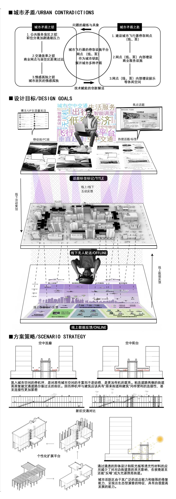
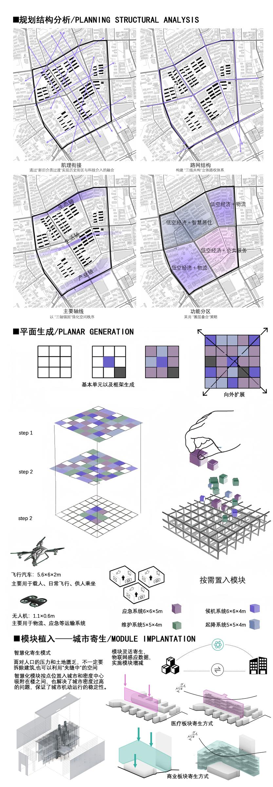
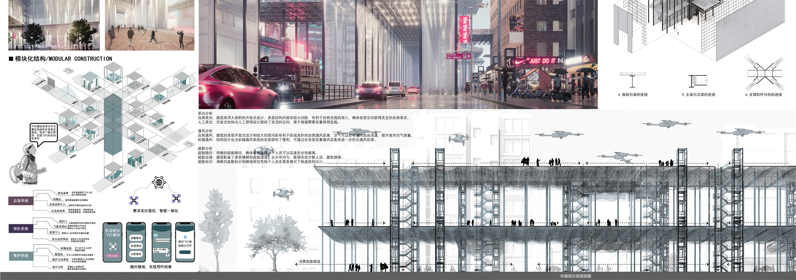
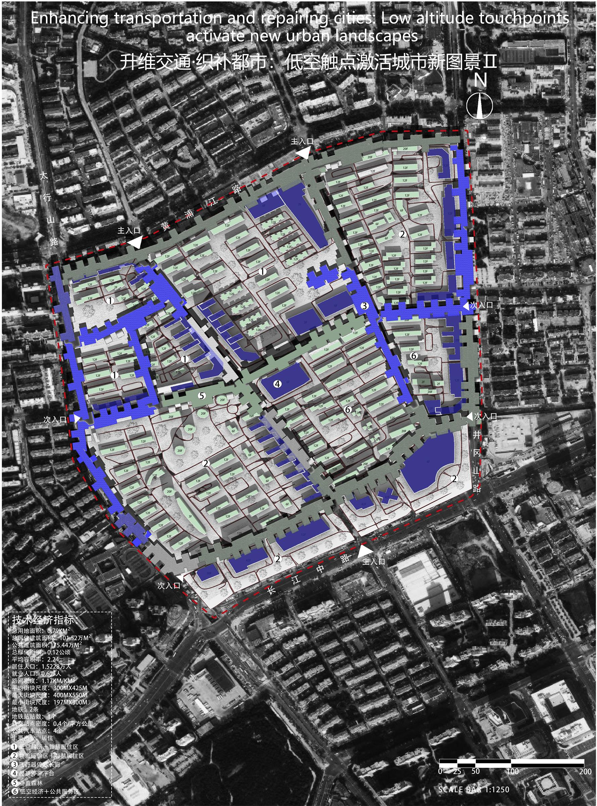
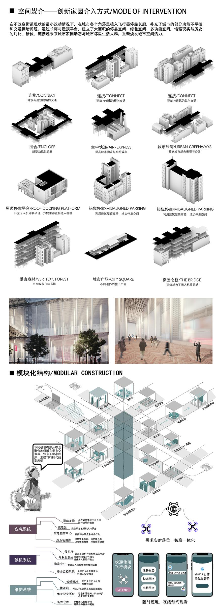

PROJECT NO. 06 · FIG. 6
城市设计URBAN DESIGN
设计说明 DESIGN STATEMENT
场地位于山东省青岛市黄岛区，北邻黄埔江路、南邻长江路、西临太行山路、东邻井冈山路，占地约 0.8 km²。设计以「升维交通 · 织补都市：低空触点激活城市新图景」为题：以低空经济为契机，以飞行器停靠平台为立体媒介，将飞行器停靠与街道空间重构缝合——利用过街天桥与柱、板、桁架等简单结构构建长廊式停靠平台，通过数字化设计实现不同尺度街道的个性化改造；解放被车辆占用的公共空间，重塑街道作为生活交往核心的功能。针对公共服务盲区、交通效率与情感孤独三把「矛盾之锁」，设计以飞行器停靠网点、商业服务设施与娱乐设施三把「矛盾之匙」逐一回应。
The site lies in Huangdao District, Qingdao, Shandong, bounded by Huangpu River Road, Changjiang Road, Taihangshan Road and Jinggangshan Road — about 0.8 km². Titled "Elevating transport, mending the city: low-altitude touchpoints activate a new urban vision", the project seizes the low-altitude economy: docking platforms for flying vehicles become a three-dimensional medium that stitches aircraft stopovers into street space. Overpasses and simple structures of columns, slabs and trusses form corridor docking platforms, while digital design tailors streets of every scale. Public space seized by vehicles is liberated, and the street is reshaped as the core of everyday social life. Three "locks" — blind spots in public service, traffic inefficiency and emotional loneliness — are answered by three "keys": docking networks, commercial services and leisure facilities.
区位与城市矛盾 LOCATION & URBAN CONTRADICTIONS
区位与场地分析：场地位于青岛黄岛区，四周由黄埔江路、长江路、太行山路与井冈山路围合。城市矛盾之锁：①公共服务盲区之锁——职住分离加剧通勤压力；②交通效率之锁——商业网点与居住区距离失衡；③情感孤独之锁——城市居民的情感孤独。城市矛盾之匙：①建立城市飞行器停靠网点平台；②网点（线、面）内部增设商业服务设施；③网点（线、面）内部增设娱乐设施。
Location and site analysis: the site sits in Huangdao, Qingdao, framed by Huangpu River, Changjiang, Taihangshan and Jinggangshan roads. The locks: ① blind spots in public service — job-housing separation strains commuting; ② traffic inefficiency — commerce and housing are out of balance; ③ emotional loneliness among urban residents. The keys: ① a network of city aircraft docking platforms; ② commercial services added inside the network (lines and areas); ③ leisure facilities added inside the network.

设计框架 URBAN FRAMEWORK
规划结构与方案生成：梳理四条交通流线，划分四大功能区，以路网结构划分体块；模块化停靠平台介入其中，勾勒起伏的天际线，基本单元与框架逐步生成。
Planning structure and scenario generation: four traffic flows are sorted, four functional zones divided, and the block structure cut by the road network; modular docking platforms intervene, sketching an undulating skyline as basic units and frames take shape.


模块植入 · 城市寄生 MODULE IMPLANTATION

飞行器规格：飞行汽车 5×6×2m（载人、日常飞行），无人机 1.1×0.6m（物流、应急运输），另有应急、维护、候机与起降系统，按需置入模块。智慧化寄生模式：面对人口压力与土地匮乏，不一定实施模块增减、拆除建筑，也可以利用「夹缝中」的空间——智慧化模块按点位植入城市尺度中心，解决城市功能度过剩与不足的问题，保证城市机动运行的稳定。
Vehicle specs: flying cars 5×6×2 m for passengers, drones 1.1×0.6 m for logistics and emergency, plus emergency, maintenance, waiting and take-off-landing systems, with modules placed as needed. Smart parasitism: facing population pressure and scarce land, the city need not add, remove or demolish — the "gaps" between buildings are used instead. Smart modules are implanted point by point, balancing functional surplus and shortage and keeping urban mobility stable.
介入方式与空间媒介 MODE OF INTERVENTION
空间媒介——创新家园介入方式：在不改变街道现状的最小改动下，在城市各个角落植入飞行器停靠长廊，补充城市的功能不平衡与交通拥堵问题；通过长廊与屋顶平台建立大面积停靠空间与多功能空间，增强现实与历史的对比，链接未来城市家园动态与城市邻里生活人群，重新焕发城市空间活力。围合、连接、空中快线与屋顶停靠平台构成空间操作的基本动作。
Mode of intervention: with minimal change to existing streets, aircraft docking corridors are implanted across the city to mend functional imbalance and congestion; corridors and rooftop platforms create generous docking and multi-use space, sharpening the contrast between present and past and linking future urban dynamics with neighbourhood life. Enclosure, connection, air express and rooftop platforms form the basic spatial moves.


模块化结构与技术分析 MODULAR STRUCTURE & ANALYSIS


模块化结构与采光、通风、疏散分析：建筑采用大面积开放式设计，多层结构间留有较大间距，利于自然光线深入；自然通风与机械通风结合；多层楼梯与疏散通道分布均匀，配合清晰标识确保人员快速安全疏散。
Modular construction with daylighting, ventilation and evacuation analyses: the open multi-level structure keeps generous spacing for natural light to reach deep; natural and mechanical ventilation combine; evenly distributed stairs and escape routes with clear signage ensure fast, safe evacuation.
功能补充与街区场景 PROGRAMMES & STREET SCENES
低空触点补充城市商业活力：办公与社交场所、空中连接通道直达小区、垂直绿化补充城市绿色。街区中植入城市图书馆、边界开放活动广场、城市绿化长廊与街区社交连廊。
Low-altitude touchpoints recharge the city's commerce: workplaces and social spaces, air corridors reaching straight into residential areas, vertical greening adding urban green. City libraries, open-edge activity plazas, green corridors and neighbourhood social links are woven into the blocks.


城市立面与场景 URBAN ELEVATION & SCENES


城市立面图（1:1500）：商贸区与居住区之间由 eVTOL 飞行器停靠平台连接，物流与载客系统沿街展开，景观视觉延续。
Urban elevation (1:1500): eVTOL docking platforms link business and residential areas; logistics and passenger systems run along the street as the landscape view continues.